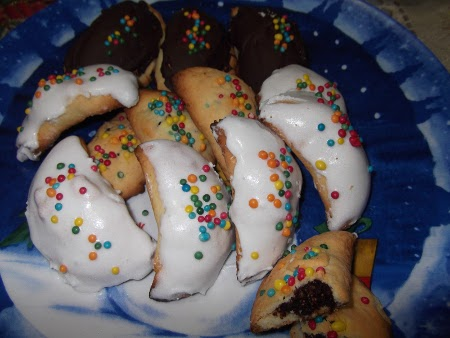

CUCINA CALABRESE: TRADIZIONI E PIATTI PIÙ FAMOSI
| Cipolla di Tropea |
Peperoncini |
Verdure "ammuddicate" |
La cucina calabrese è legata alla vita religiosa e ha radici in tempi antichi, dalla Magna Grecia, agli arabi, all'Unità d'Italia. Per esempio a Natale e all'Epifania si mettono tradizionalmente in tavola tredici piatti diversi mentre a Pasqua si consuma agnello arrosto. Il cibo dei calabresi non si è molto modificato nel tempo. I piatti hanno origini diverse a seconda delle popolazioni che hanno abitato la regione. L'introduzione del peperoncino risale alla scoperta delle Americhe, dato che cresceva in America Centrale. Sono molto utilizzati i cibi conservati, come le acciughe, gli insaccati di maiale, i formaggi, le verdure sottolio e i pomodori secchi. Sono utilizzate le verdure fresche, come le fave, la famosa cipolla di Tropea, i pomodori, le melanzane, i peperoni e i carciofi (gli ultimi quattro si possono fare “ammuddicati”, cioè ripieni di pangrattato, aglio e capperi). Si usa anche lo stoccafisso (merluzzo essiccato), cucinato in diversi modi, per esempio con patate, olive e pomodori. Tra i dolci di Natale si trovano i Petrali, biscotti tipici di Reggio Calabria, a forma di mezzaluna, fatti di pastafrolla e farciti con fichi, noci, mandorle e buccia d'agrumi candita. L'esterno è guarnito con tuorlo d'uovo sbattuto e palline di zucchero colorate.
|  |
||
| Soppressata |
Stoccafisso con patate olive e pomodori |
Petrali |
Home Territorio Popolazione Attività economiche Personaggi Storia Curiosità